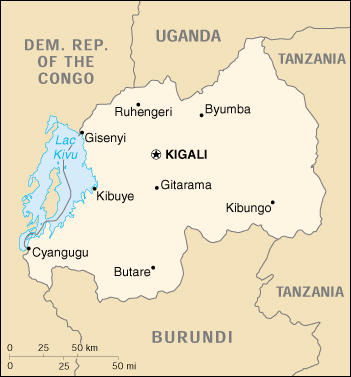

|
Rwanda | |
| Introduction Geography People Government Economy Communications Transportation Military Transnational Issues | ||
|  | ||
| Rwanda | Introduction | Top of Page |
| Background: | In 1959, three years before independence, the majority ethnic group, the Hutus overthrew the ruling Tutsi king. Over the next several years thousands of Tutsis were killed, and some 150,000 driven into exile in neighboring countries. The children of these exiles later formed a rebel group, the Rwandan Patriotic Front (RPF) and began a civil war in 1990. The war, along with several political and economic upheavals, exacerbated ethnic tensions culminating in April 1994 in the genocide of roughly 800,000 Tutsis and moderate Hutus. The Tutsi rebels defeated the Hutu regime and ended the killing in July 1994, but approximately 2 million Hutu refugees - many fearing Tutsi retribution - fled to neighboring Burundi, Tanzania, Uganda, and Zaire, now called the Democratic Republic of the Congo (DROC). Since then most of the refugees have returned to Rwanda. Despite substantial international assistance and political reforms - including Rwanda's first local elections in March 1999 - the country continues to struggle to boost investment and agricultural output and to foster reconciliation. A series of massive population displacements, a nagging Hutu extremist insurgency, and Rwandan involvement in two wars over the past four years in the neighboring DROC continue to hinder Rwanda's efforts. |
| Rwanda | Geography | Top of Page |
| Location: | Central Africa, east of Democratic Republic of the Congo |
| Geographic coordinates: | 2 00 S, 30 00 E |
| Map references: | Africa |
| Area: |
total:
26,338 sq km
land: 24,948 sq km water: 1,390 sq km |
| Area - comparative: | slightly smaller than Maryland |
| Land boundaries: |
total:
893 km
border countries: Burundi 290 km, Democratic Republic of the Congo 217 km, Tanzania 217 km, Uganda 169 km |
| Coastline: | 0 km (landlocked) |
| Maritime claims: | none (landlocked) |
| Climate: | temperate; two rainy seasons (February to April, November to January); mild in mountains with frost and snow possible |
| Terrain: | mostly grassy uplands and hills; relief is mountainous with altitude declining from west to east |
| Elevation extremes: |
lowest point:
Rusizi River 950 m
highest point: Volcan Karisimbi 4,519 m |
| Natural resources: | gold, cassiterite (tin ore), wolframite (tungsten ore), methane, hydropower, arable land |
| Land use: |
arable land:
35%
permanent crops: 13% permanent pastures: 18% forests and woodland: 22% other: 12% (1993 est.) |
| Irrigated land: | 40 sq km (1993 est.) |
| Natural hazards: | periodic droughts; the volcanic Virunga mountains are in the northwest along the border with Democratic Republic of the Congo |
| Environment - current issues: | deforestation results from uncontrolled cutting of trees for fuel; overgrazing; soil exhaustion; soil erosion; widespread poaching |
| Environment - international agreements: |
party to:
Biodiversity, Climate Change, Desertification, Endangered Species, Nuclear Test Ban
signed, but not ratified: Law of the Sea |
| Geography - note: | landlocked; predominantly rural population |
| Rwanda | People | Top of Page |
| Population: |
7,312,756
note: estimates for this country explicitly take into account the effects of excess mortality due to AIDS; this can result in lower life expectancy, higher infant mortality and death rates, lower population and growth rates, and changes in the distribution of population by age and sex than would otherwise be expected (July 2001 est.) |
| Age structure: |
0-14 years:
42.4% (male 1,555,878; female 1,544,942)
15-64 years: 54.73% (male 1,989,501; female 2,013,012) 65 years and over: 2.87% (male 83,769; female 125,654) (2001 est.) |
| Population growth rate: | 1.16% (2001 est.) |
| Birth rate: | 33.97 births/1,000 population (2001 est.) |
| Death rate: | 21.13 deaths/1,000 population (2001 est.) |
| Net migration rate: | -1.21 migrant(s)/1,000 population (2001 est.) |
| Sex ratio: |
at birth:
1.03 male(s)/female
under 15 years: 1.01 male(s)/female 15-64 years: 0.99 male(s)/female 65 years and over: 0.67 male(s)/female total population: 0.99 male(s)/female (2001 est.) |
| Infant mortality rate: | 118.92 deaths/1,000 live births (2001 est.) |
| Life expectancy at birth: |
total population:
38.99 years
male: 38.35 years female: 39.65 years (2001 est.) |
| Total fertility rate: | 4.89 children born/woman (2001 est.) |
| HIV/AIDS - adult prevalence rate: | 11.21% (1999 est.) |
| HIV/AIDS - people living with HIV/AIDS: | 400,000 (1999 est.) |
| HIV/AIDS - deaths: | 40,000 (1999 est.) |
| Nationality: |
noun:
Rwandan(s)
adjective: Rwandan |
| Ethnic groups: | Hutu 84%, Tutsi 15%, Twa (Pygmoid) 1% |
| Religions: | Roman Catholic 52.7%, Protestant 24%, Adventist 10.4%, Muslim 1.9%, indigenous beliefs and other 6.5%, none 4.5% (1996) |
| Languages: | Kinyarwanda (official) universal Bantu vernacular, French (official), English (official), Kiswahili (Swahili) used in commercial centers |
| Literacy: |
definition:
age 15 and over can read and write
total population: 48% male: 52% female: 45% (1995 est.) |
| Rwanda | Government | Top of Page |
| Country name: |
conventional long form:
Rwandese Republic
conventional short form: Rwanda local long form: Republika y'u Rwanda local short form: Rwanda former: Ruanda |
| Government type: | republic; presidential, multiparty system |
| Capital: | Kigali |
| Administrative divisions: | 12 prefectures (in French - prefectures, singular - prefecture; in Kinyarwanda - plural - NA, singular - prefegitura); Butare, Byumba, Cyangugu, Gikongoro, Gisenyi, Gitarama, Kibungo, Kibuye, Kigali Rurale, Kigali-ville, Umutara, Ruhengeri |
| Independence: | 1 July 1962 (from Belgium-administered UN trusteeship) |
| National holiday: | Independence Day, 1 July (1962) |
| Constitution: | on 5 May 1995, the Transitional National Assembly adopted as Fundamental Law the constitution of 18 June 1991, provisions of the 1993 Arusha peace accord, the July 1994 Declaration by the Rwanda Patriotic Front, and the November 1994 multiparty protocol of understanding |
| Legal system: | based on German and Belgian civil law systems and customary law; judicial review of legislative acts in the Supreme Court; has not accepted compulsory ICJ jurisdiction |
| Suffrage: | 18 years of age; universal adult |
| Executive branch: |
chief of state:
President Maj. Gen. Paul KAGAME (FPR) (since 22 April 2000)
head of government: Prime Minister Bernard MAKUZA (since 8 March 2000) cabinet: Council of Ministers appointed by the president elections: normally the president is elected by popular vote for a five-year term; special election for new president by deputies of the National Assembly and governmental ministers held 17 April 2000 (next national election to be held NA 2003); prime minister is appointed by the president election results: Paul KAGAME (FPR) elected president in a special parliamentary/ministerial ballot receiving 81 of a possible 86 votes |
| Legislative branch: |
unicameral Transitional National Assembly or Assemblee Nationale de Transition (a power-sharing body with 70 seats established on 12 December 1994 following a multiparty protocol of understanding; members were named by their parties, number of seats per party predetermined by the Arusha peace accord)
note: four additional seats, two for women and two for youth, added in 2001 elections: the last national legislative elections were held 16 December 1988 for the National Development Council (the legislature prior to the advent of the Transitional National Assembly); no elections have been held for the Transitional National Assembly as the distribution of seats was predetermined by the Arusha peace accord election results: percent of vote by party - NA%; seats by party - FPR 13, MDR 13, PSD 13, PL 13, PDC 6, RPA 6, PSR 2, PDI 2, UDPR 2; note - the distribution of seats was predetermined, four additional seats (two for women and two for youth) added in 2001 |
| Judicial branch: | Supreme Court; communal courts; appeals courts |
| Political parties and leaders: | Centrist Democratic Party or PDC [Jean-Nipomuscene NAYINZIRA]; Democratic Socialist Party or PSD [Charles NTAKIRUTINKA, Vincent BIRUTA, Augusin IYAMUREMYE]; Democratic Popular Union of Rwanda or UDPR [Adrien RANGIRA]; Democratic Republican Movement or MDR [Celestin KABANDA, Emile NTWARABAKIGA, Christian MARARA]; Islamic Democratic Party or PDI [Andre BUMAYA]; Liberal Party or PL [Pie MUGABO, Enock KABERA, Prosper MUGIRANEZA]; Rwanda Patriotic Army or RPA [Maj. Gen. Paul KAGAME, commander]; Rwanda Patriotic Front or FPR [Maj. Gen. Paul KAGAME]; Rwandan Socialist Party or PSR [Medard RUTIJANWA] |
| Political pressure groups and leaders: | IBUKA - association of genocide survivors |
| International organization participation: | ACCT, ACP, AfDB, CCC, CEEAC, CEPGL, ECA, FAO, G-77, IBRD, ICAO, ICFTU, ICRM, IDA, IFAD, IFC, IFRCS, ILO, IMF, Intelsat, Interpol, IOC, IOM (observer), ISO (correspondent), ITU, NAM, OAU, OPCW, UN, UNCTAD, UNESCO, UNIDO, UPU, WCL, WHO, WIPO, WMO, WToO, WTrO |
| Diplomatic representation in the US: |
chief of mission:
Ambassador Richard SEZIBERA
chancery: 1714 New Hampshire Ave. NW, Washington, DC 20009 telephone: [1] (202) 232-2882 FAX: [1] (202) 232-4544 |
| Diplomatic representation from the US: |
chief of mission:
Ambassador George M. STAPLES
embassy: Boulevard de la Revolution, Kigali mailing address: B. P. 28, Kigali telephone: [250] 756 01 through 03, 721 26, 771 47 FAX: [250] 721 28 |
| Flag description: | three equal vertical bands of red (hoist side), yellow, and green with a large black letter R centered in the yellow band; uses the popular pan-African colors of Ethiopia; similar to the flag of Guinea, which has a plain yellow band |
| Rwanda | Economy | Top of Page |
| Economy - overview: | Rwanda is a rural country with about 90% of the population engaged in (mainly subsistence) agriculture. It is the most densely populated country in Africa; is landlocked; and has few natural resources and minimal industry. Primary exports are coffee and tea. The 1994 genocide decimated Rwanda's fragile economic base, severely impoverished the population, particularly women, and eroded the country's ability to attract private and external investment. However, Rwanda has made significant progress in stabilizing and rehabilitating its economy. GDP has rebounded, and inflation has been curbed. In June 1998, Rwanda signed an Enhanced Structural Adjustment Facility (ESAF) with the IMF. Rwanda has also embarked upon an ambitious privatization program with the World Bank. Continued growth in 2001 depends on the maintenance of international aid levels and the strengthening of world prices of coffee and tea. |
| GDP: | purchasing power parity - $6.4 billion (2000 est.) |
| GDP - real growth rate: | 5.8% (2000 est.) |
| GDP - per capita: | purchasing power parity - $900 (2000 est.) |
| GDP - composition by sector: |
agriculture:
40%
industry: 20% services: 40% (2000 est.) |
| Population below poverty line: | 70% (2000 est.) |
| Household income or consumption by percentage share: |
lowest 10%:
4.2%
highest 10%: 24.2% (1983-85) |
| Inflation rate (consumer prices): | 4% (2000) |
| Labor force: | 3.6 million |
| Labor force - by occupation: | agriculture 90% |
| Unemployment rate: | NA% |
| Budget: |
revenues:
$198 million
expenditures: $411 million, including capital expenditures of $NA (2000 est.) |
| Industries: | cement, agricultural products, small-scale beverages, soap, furniture, shoes, plastic goods, textiles, cigarettes |
| Industrial production growth rate: | 8.7% (1998 est.) |
| Electricity - production: | 132 million kWh (1999) |
| Electricity - production by source: |
fossil fuel:
3.03%
hydro: 96.97% nuclear: 0% other: 0% (1999) |
| Electricity - consumption: | 191.8 million kWh (1999) |
| Electricity - exports: | 1 million kWh (1999) |
| Electricity - imports: | 70 million kWh (1999) |
| Agriculture - products: | coffee, tea, pyrethrum (insecticide made from chrysanthemums), bananas, beans, sorghum, potatoes; livestock |
| Exports: | $68.4 million (f.o.b., 2000 est.) |
| Exports - commodities: | coffee, tea, hides, tin ore |
| Exports - partners: | Germany, Belgium, Pakistan, Italy, Kenya |
| Imports: | $245.9 million (f.o.b., 2000 est.) |
| Imports - commodities: | foodstuffs, machinery and equipment, steel, petroleum products, cement and construction material |
| Imports - partners: | Kenya, Tanzania, US, Benelux, France, India |
| Debt - external: | $1.3 billion (1999) |
| Economic aid - recipient: | $591.5 million (1997); note - in summer 1998, Rwanda presented its policy objectives and development priorities to donor governments resulting in multiyear pledges in the amount of $250 million |
| Currency: | Rwandan franc (RWF) |
| Currency code: | RWF |
| Exchange rates: | Rwandan francs per US dollar - 432.24 (January 2001), 389.70 (2000), 333.94 (1999) 312.31 (1998), 301.53 (1997), 306.82 (1996) |
| Fiscal year: | calendar year |
| Rwanda | Communications | Top of Page |
| Telephones - main lines in use: | 15,000 (1995) |
| Telephones - mobile cellular: |
NA
note: however, Rwanda has mobile cellular service between Kigali and several prefecture capitals (2000) |
| Telephone system: |
general assessment:
telephone system primarily serves business and government
domestic: the capital, Kigali, is connected to the centers of the prefectures by microwave radio relay; the remainder of the network depends on wire and HF radiotelephone international: international connections employ microwave radio relay to neighboring countries and satellite communications to more distant countries; satellite earth stations - 1 Intelsat (Indian Ocean) in Kigali (includes telex and telefax service) |
| Radio broadcast stations: | AM 0, FM 3, shortwave 1 (1998) |
| Radios: | 601,000 (1997) |
| Television broadcast stations: | 2 (1997) |
| Televisions: | NA; probably less than 1,000 (1997) |
| Internet country code: | .rw |
| Internet Service Providers (ISPs): | 1 (2000) |
| Internet users: | 1,000 (2000) |
| Rwanda | Transportation | Top of Page |
| Railways: | 0 km |
| Highways: |
total:
12,000 km
paved: 1,000 km unpaved: 11,000 km (1997 est.) |
| Waterways: | note: Lac Kivu navigable by shallow-draft barges and native craft |
| Ports and harbors: | Cyangugu, Gisenyi, Kibuye |
| Airports: | 8 (2000 est.) |
| Airports - with paved runways: |
total:
4
over 3,047 m: 1 914 to 1,523 m: 2 under 914 m: 1 (2000 est.) |
| Airports - with unpaved runways: |
total:
4
914 to 1,523 m: 1 under 914 m: 3 (2000 est.) |
| Rwanda | Military | Top of Page |
| Military branches: | Army, Navy, Air Force |
| Military manpower - availability: | males age 15-49: 1,815,633 (2001 est.) |
| Military manpower - fit for military service: | males age 15-49: 924,544 (2001 est.) |
| Military expenditures - dollar figure: | $58 million (FY01) |
| Military expenditures - percent of GDP: | 3.2% (FY01) |
| Rwanda | Transnational Issues | Top of Page |
| Disputes - international: | Rwandan military forces are supporting the rebel forces in the civil war in the Democratic Republic of the Congo |
{kind=link}
{kind=link}